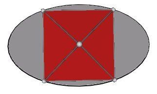
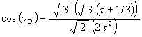
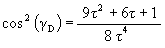

In Figure #8, the “Jitterbug portion” is the actual path that vertices will travel (direction of travel is not considered here.) No vertex of the Jitterbug (when considering only the Octahedron to VE to Octahedron motion) traverses that portion of the ellipse curve which is within the “Square cross section of Octahedron” portion of the ellipse. (See Figure #8.) Later in this paper we will consider what happens if the vertices are allowed to move around the complete ellipse.
Figure #8 Ellipse and Octahedron edges
Figure #8 shows the complete ellipse in the YZ-plane with the usual Jitterbug vertex path portion of the ellipse marked. In the following sections of this paper we will explore the consequences of allowing the vertices of the Jitterbug to orbit around the entire ellipse.
Note that there are 2 diametrically opposite Jitterbug vertices per ellipse which travel in the same direction. So there are two “Jitterbug portions” to the ellipse. Since there are 12 vertices to the Jitterbug (not in the Octahedron position) then there are 12/2 = 6 total ellipses for the Jitterbug.
Note that the angular range traversed by a vertex along the ellipse in the YZ-plane is
– 45° £ q £ 45°
All four of the square’s edges in the ellipse of Figure #8 are Octahedron edges. Each pair of opposite edges of the Octahedron is part of an ellipse. Therefore, there are two orthogonal ellipses in the same plane. Figure #9 shows both ellipses defined by the motion of 4 Jitterbug vertices.
Figure #9 Two ellipse per plane
Following only one vertex (one vertex of a rotating Jitterbug triangle) and with the Jitterbug in the Octahedron position, we label the initial vertex position “P1”. This vertex will travel along the ellipse, passing through an Icosahedron position, to reach vertex position “P2”, the VE vertex position. Then, with the Jitterbug triangle continuing to rotate in the same direction, the Jitterbug vertex passes through another Icosahedron vertex position to reach the Octahedron position “P3”. (Further details relating the Jitterbug vertex position along the ellipse and various polyhedra are given below.) Note that if the Jitterbug triangles were allowed to continue to rotate in the same direction then the vertex now at vertex position “P3” would not proceed to vertex position “P4”. Instead, is leaves this plane to follow another ellipse.
The Octahedron has 12 edges forming 6 opposite edge pairs. So there are a total of 6 ellipses to define the complete Jitterbug motion. These 6 ellipses are show in Figure #10 and Figure #11.
Figure #10 Six ellipses and Octahedron
Figure #11 Six ellipses and the VE
It is well known, and as mentioned above, that the Jitterbug vertices pass through an Icosahedron position during its Jitterbug motion. (See Figure #12.) What is not well know is that the Jitterbug vertices also pass through a regular Dodecahedron position along the ellipses. (See Figure #13.)

Figure #12 Jitterbug in Icosahedron position
Figure #13 Jitterbug in regular Dodecahedron position
Unlike the Jitterbug in the Icosahedron position, not all the vertices of the regular Dodecahedron are defined by one Jitterbug. The Dodecahedron has 20 vertices. The Jitterbug in the Dodecahedron position (as well as in the Icosahedron position) has only 12 vertices. To completely define all 20 vertices of the Dodecahedron in a symmetrical way requires 5 Jitterbugs. This gives a total of 5 × 12 = 60 vertices. When this is done, the pentagon faces of the Dodecahedron become pentagrams. (It is possible to cover all the Dodecahedron vertices with 3 Jitterbugs but not in a symmetrical way. That is, not in a way as to have each of the Dodecahedron’s vertices covered by the same number of Jitterbug vertices and each of the Dodecahedron’s faces containing the same number of Jitterbug triangle edges.)
Figure #14 Symmetrical covering of Dodecahedron by 5 Jitterbugs
(These 5 Jitterbugs are the basis for the 120 Polyhedron as explained in the paper “What’s in this Polyhedron?” which can be found at http://www.rwgrayprojects.com/Lynn/NCH/whatpoly.html )
The Jitterbug in the VE position is shown in Figure #15.
Figure #15 Jitterbug in the VE position
Because of the symmetry of the elliptical path about its semimajor axis, a Jitterbug vertex will pass through 2 Icosahedra and 2 regular Dodecahedra positions. These are shown in Figure #16. The vertex positions labeled “D,C,T” stand for the “Dodecahedron, Cube, Tetrahedron” position. (It is well known that 5 Cubes and 10 Tetrahedra share the same vertices as a regular Dodecahedron.) The positions labeled “O” are the Octahedron positions, those labeled “I” are the Icosahedron positions, and those labeled “VE” are the VE positions.

We can calculate the angular amount g that the Jitterbug triangle rotates from the VE ( g =0°) position into the Icosahedron position (g I).
Starting with equation (3)
| (3) |
we write
| (4) |
Now, the distance from the center of volume to the face center of an Icosahedron’s triangle face is
where
Here, we have V = DVFI for equation (4).
Since the size of the Icosahedron triangles are the same as the size of the Jitterbug triangles, we have
ELI = EL
Then equation (4) for the Icosahedron position of the Jitterbug becomes
Which gives g I @ 22.23875609°.
This means that the Jitterbug triangle is rotated by the angular amount

from the VE position (clockwise or counter clockwise) to be in the Icosahedron position.
Note that the triangles of the Jitterbug are like gears in that if a triangle is rotated clockwise, then the 3 triangles attached to it must rotate counterclockwise.
The corresponding angle in the YZ-plane through which the ellipse radius r must sweep through to get to the Icosahedron position can be obtained by using the equation (derived above)


So,

which is the angle about the X-axis that the ellipse radius rotates to the Icosahedron position.
To calculate the angular rotation of the Jitterbug triangles for the regular Dodecahedron position, we first find the radial position of one of the Jitterbug’s triangles when in the Dodecahedron position.
Figure #17 Three vertices of the Jitterbug and Dodecahedron
Figure #17 shows 3 of the Jitterbug’s vertices coinciding with 3 of the Dodecahedron’s vertices. It can be shown that these three vertices can be given the (x, y, z) coordinates
V1 = (0, - t , t 3)
V2 = ( - t 3, 0, t )
V3 = ( - t , - t 3, 0)
where
.
Using these coordinates sets the Octahedron’s edge length. In this case, the edge length of the Octahedron, calculated using the equation
t n+1 = t n + t n-1
ELO = distance(V1, V2) = sqrt( t 6 + t 2 + ( t 3 - t ) 2 )
ELO = 2 t 2
Then, using t 3 = t 2 + t = t + 1 + t = 2 t + 1, the center of the triangle face is at
FC = ( - ( t + 1/3), - ( t + 1/3), ( t + 1/3) )
which is a distance
from the center of volume.
Again, using equation (4)
| (4) |

|
with V = DVFDT and EL = ELO, we get

so that
This is the angular amount that the Jitterbug triangle is rotated about the V-axis from the VE position to the Dodecahedron position.
To get the angular amount the ellipse radius is rotated about the X-axis to get to the Dodecahedron position along the ellipse, we again use the equation

With

we get
So, the rotation about the X-axis which sweeps the ellipse radius to the Dodecahedron position is